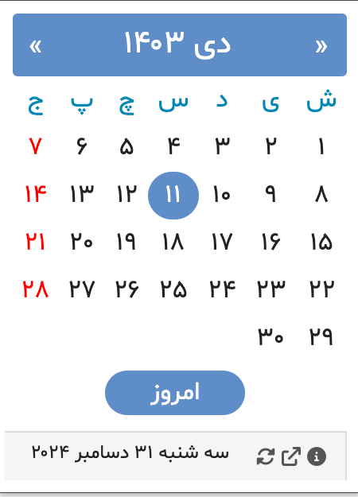

یک افزونه ساده مبتنی بر جاوااسکریپت برای مرورگرهای Chrome و Edge که امکان استفاده از تقویم جلالی (شمسی) و تبدیل تاریخ٬ نمایش تاریخ دلخواه و فهرست تعطیلات٬ مناسبتهای ملی٬ مشاهیر ایرانی و مناسبتهای باستانی را فراهم میکند.
نسخه: ۳.۹۲
آخرین بروزرسانی: ۲۲ مرداد ۱۴۰۴
امکانات
- نمای ماهانه: نمایش ماه جاری جلالی با معادل میلادی در هنگام حرکت ماوس روی تاریخها
- ناوبری: حرکت آسان بین ماهها با دگمههای قبل/بعد
-
تبدیل چند تقویمی: تبدیل تاریخ بین:
- تقویم جلالی (شمسی)
- تقویم میلادی
- تقویم قمری
-
اطلاعات تکمیلی:
- نماد سال چینی برای سال انتخاب شده
- محاسبه فاصله روزها برای تاریخهای گذشته یا آینده
- چند زبانه: در دسترس به زبانهای فارسی٬انگلیسی٬آلمانی٬فرانسوی٬نروژي٬سوئدی٬روسی٬ترکی٬ایتالیایی٬ عربی و اسپانیایی که در بخش گزینهها قابل تنظیم هست.
- محدوده تاریخ: پشتیبانی از سالهای ۱۲۰۰ تا ۱۵۰۰ شمسی
راهنمای استفاده
- استفاده از دگمههای بالا سمت چپ و راست برای حرکت بین ماهها
- کلیک روی دگمه "امروز" برای بازگشت به تاریخ جاری
- حرکت ماوس روی تاریخها برای مشاهده معادل میلادی
تبدیل تقویم
انتخاب هر تاریخ در یک سیستم تقویمی برای مشاهده معادل آن در:
- تقویم جلالی
- تقویم میلادی
- تقویم قمری
نصب
- برای نصب در مرورگرهای Chrome یا Edge به سایت Chrome Web Store مراجعه کنید.
تاریخچه
اولین انتشار در مهر ماه ۱۳۸۵، این افزونه بیش از ۱۸ سال است که به کاربران در استفاده از تقویم شمسی کمک میکند.
گالری
|  |
| تقویم نمای ماهیانه |

|
| تبدیل تاریخ |

|
| برو به تاریخ |

|
| تنظیمات |